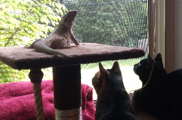

Dragon Friends
We were not sure if the cats would get along very well with a bearded dragon. So when we first started to let Oreo out of her cage to explore the house, we hovered alot! Soon we found out that we do not have to do that because they get along fine. It is funny to watch the cats move out of Oreo's way when she walks in her direction. Especially because we know that she has no intention in harming them.
Notice in the video below how calmly Oreo just sits there while Oscar's tail is flipping close to her face.